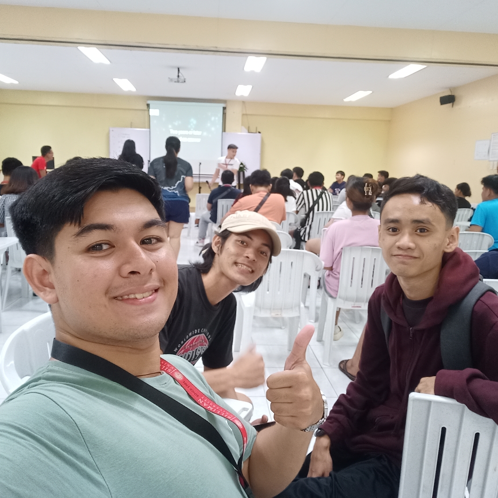

CCS Karaoke Challenge
Aug.23,2023
Organizer: CCS
Points: 1
The school karaoke event was a great night. The ATA hall had a lot of seating and the set up
was very good as everyone in the room could see the whole area. There was this infectious energy in the
room, with students belting out their favorite tunes and cheering each other on. It's pretty cool how
something as simple as a karaoke machine can bring everyone together, creating hilarious memories and
showcasing hidden talents. Me and my friends sang a few songs but were ultimately just participants.
The school karaoke event lit up the campus with an irresistible vibe! It transcended the usual school activities, becoming
a melting pot of unbridled enthusiasm and uninhibited joy. Beyond the melodies echoing through the room, it was a melting pot
of shared laughter, high spirits, and a sense of camaraderie. Students who might have been shy in class were transformed into
confident performers, egged on by the supportive cheers of their peers. It was amazing to witness how a simple karaoke machine
could ignite such passion and draw out talents that had been quietly waiting for their moment in the spotlight.
The event didn't just entertain; it revealed the hidden layers of personality within each student, creating a mosaic of unforgettable
moments and strengthening the bonds within the school community.Laughter reverberated across the room as students fearlessly belted
out tunes, sometimes hitting the perfect notes and other times hilariously missing them. The event transcended mere entertainment;
it fostered a sense of community and camaraderie among the attendees, uniting them in a tapestry of laughter, applause,
and encouragement.
Because of this event, I am more confident, closer to my classmates, and filled with awesome memories. It made me step up,
sing out loud, and enjoy the fun side of school. It showed me how cool it is to let go and be part of something bigger than
just classes and books. Thanks to that night, I'm more outgoing and connected with my schoolmates than ever before.
Una Voce
Aug.24,2023
Organizer: COPVA
Points: 1
The school's vocal operatic show was beautiful. Hearing the performers sing those tunes with such
passion was really something else. As my first time in Luce, I must say the venue was simply breathtaking. Seeing
everyone on stage, pouring their hearts out, was incredibly impressive. Overall, it was a night filled with beautiful melodies,
emotions, and a whole lot of vocal talent. I was just a mesmerized observer to this event.
The school's vocal operatic show was a mesmerizing experience. The performers poured their hearts into those songs was like
delving into a world of stories woven through music. Each performance felt like a journey, carrying us through a spectrum of
emotions and narratives that transcended mere singing. The stage wasn't just a platform; it was a canvas where each student
painted a vivid picture with their voice, leaving the audience in awe. The passion and dedication radiating from the performers
were palpable, creating an atmosphere that resonated with the audience's emotions and admiration.
The night was a harmonious blend of beautiful melodies and raw emotions, showcasing an abundance of vocal talent within the
school. It wasn't just about the technical prowess; it was the authenticity and heartfelt delivery that truly captivated
everyone present. The show wasn't confined to the stage; it reverberated throughout the audience, leaving a lasting impression
of the power of music to evoke profound emotions and connect people through shared experiences.
Because of this event, I am inspired to express myself more through music. It showed me how emotions can flow through songs and
connect us all. I feel more appreciative of talent and effort, seeing how hard my classmates worked for this show. It made me
realize the power of a voice in telling stories and touching hearts. Thanks to that night, I'm more open to exploring different
types of music and finding my own voice.
Parada Sillimaniana
Aug.27,2023
Organizer: Silliman University
Points: 1
The Silliman University founders day parade was a vibrant celebration of
history and community. The route we took was very good and not too long and the displaying of booths was very fun.
There was this lively atmosphere, with students, faculty, and alumni coming together in unity.
It's pretty amazing how the parade wasn't just about commemorating the past but also about celebrating
the present bonds that connect everyone within the Silliman University family. Me and my friends were just participants
The Silliman University founders day parade was a spectacle that brought the campus to life! It wasn't merely a procession;
it felt like a canvas painted with a rainbow of school pride and historical significance. The streets echoed with cheers and
laughter as students, faculty, and alumni paraded through, each contingent contributing a burst of color and energy.
What stood out was the palpable sense of togetherness, a collective celebration that bridged generations, honoring the legacy
of the past while embracing the vibrant present. The parade wasn't just a historical nod; it was a living testament to the enduring
spirit and camaraderie within the Silliman University community.
Amidst the floats and banners, there was this undeniable charm that united everyone, creating an atmosphere filled with infectious
enthusiasm. It was more than a march; it was a jubilant manifestation of shared experiences and the bonds that knit together the
Silliman family. Beyond commemorating the founding, the parade embodied the living legacy of unity and belonging that continues
to define the spirit of the university, fostering a sense of pride and connection among all who walked those colorful streets.
Because of this event, I feel more connected to my school community. It showed me the rich history and unity within our campus.
I'm inspired by the lively spirit and pride displayed by everyone involved. It made me appreciate the bonds between students,
faculty, and alumni. Thanks to that parade, I'm filled with school pride and a sense of belonging.
Byahe: Roundtrip with Willfreedo
Aug.28,2023
Organizer: COPVA
Points: 1
The school's orchestra show was breathtaking. It was amazing to see everyone play together and make
such beautiful music. The melodies they created filled the auditorium and brought a lot of joy. The auditorium was once again
very beautiful and the band performed elegantly along with Willfreedo after. I was impressed by how hard they must've
practiced to make it all sound so good. It was a really cool experience that made me appreciate music even more. Me and my
friends were just observers here.
The school's orchestra show was absolutely breathtaking. Witnessing everyone playing in harmony and creating such beautiful
music was truly mesmerizing. Their melodies echoed through the auditorium, wrapping us all in a blanket of sheer joy. The
ambiance was magical, with the beautifully adorned auditorium setting the stage for a graceful performance, especially with
Willfreedo joining the band. I couldn't help but be in awe of the dedication and effort they put in—practicing had to have been
intense to pull off such an amazing show. Experiencing it all made me realize just how much depth and skill there is to music,
amplifying my appreciation for this art form. My friends and I were mere spectators, but we felt immersed in the enchanting atmosphere
they created.
The orchestra's performance wasn't just music; it was a captivating display of talent and passion. Each note seemed meticulously
crafted, resonating with the audience and leaving a lingering sense of admiration. The show was a testament to their hard work and
commitment, transforming the auditorium into a realm where melodies danced freely. As spectators, we were privileged to witness the
beauty of their musical prowess, and it sparked a newfound admiration for the dedication musicians put into perfecting their craft.
It was a night that illuminated the depth of music's impact and left me inspired to delve deeper into this world of harmonies
and rhythms.
Because of this event, I feel more amazed by music. It showed me the power of teamwork and practice in creating something beautiful.
I'm inspired by the orchestra's dedication and how they made the auditorium come alive. It made me appreciate the effort behind
making music that sounds so good. Thanks to that show, I'm more interested in exploring music and its different sounds.
CCS Acquaintance party
Sep.29,2023
Organizer: CCS
Points: 1
The college acquaintance party was a blast! It was a night of making new friends
and creating unforgettable memories. The venue and catering were well organized and the speaker never failed
to entice us. There was this fantastic vibe, with music blaring, laughter filling the area and
the air, and everyone letting loose after hitting the books hard. It's pretty cool how a simple event can
break the ice, bringing together a bunch of strangers who leave as pals, sharing stories and jokes that'll
probably be remembered throughout the college years. Me and my friends were just participants.
The college acquaintance party was an absolute blast! It felt like a breath of fresh air, a break from the usual academic
grind. The atmosphere was electric, pulsating with energy as everyone shed their inhibitions and connected over shared laughter
and good vibes. It was more than just a gathering; it was a gateway to forming bonds that could last a lifetime. The music
created this infectious rhythm that got everyone moving, mingling, and getting to know each other beyond the confines of lecture
halls and textbooks. It was fascinating how this simple event became a catalyst for breaking down barriers, turning strangers into
friends and setting the stage for friendships that seemed destined to flourish throughout our college journey.
Amidst the beats and chatter, there was this sense of unity and excitement that transcended the initial awkwardness. It was
heartwarming to witness how easy it was for everyone to connect, to share anecdotes, and build connections that went beyond just
being acquaintances. The party wasn't just a one-night affair; it kickstarted a network of relationships and camaraderie that
laid the foundation for a vibrant and supportive college community. It's amazing how a single event could set the tone for an
entire college experience, fostering an environment where friendships could blossom amidst the chaos of academia.
Because of this event, I feel more connected. It showed me how easy it is to make friends in college. I'm excited about the
people I met and the stories we shared. It made me realize how important having a good time is alongside studying. Thanks to
that party, I'm more open to meeting new folks and building friendships.
Buglasan Music Fest at Escano
Sep.29,2023
Organizer: Dumaguete City
Points: 1
The Buglasan Music Fest was a total blast! It was like a big party with music everywhere. The beats
and melodies had everyone grooving and enjoying themselves. The area was very lively and had that homey feel to the area, while
the hosts were very good at hyping the audience. Seeing all those different musicians and performers was pretty
cool—it was like a mix of all kinds of music styles. It was a fun day filled with great tunes, good vibes, and lots of dancing!. I was
just an observer during this event.
The Buglasan Music Fest was an absolute whirlwind of excitement! It felt like the entire town had transformed into a playground
of melodies and rhythms. The festival's energy was infectious; from the moment you stepped in, you were enveloped in a symphony
of beats that urged you to move. Witnessing the array of talented musicians and performers was a treat—the diversity of music
styles on display was mind-blowing. It wasn't just about the music; it was a celebration of cultures and sounds, a vibrant tapestry
of melodies intertwining to create an unforgettable experience.
The festival was a kaleidoscope of joy, echoing with laughter, chatter, and the collective delight of everyone present. What made
it exceptional was the sense of togetherness it fostered; strangers became friends through a shared love for music. The day was a
canvas painted with great tunes, infectious positivity, and an irresistible urge to dance. It was more than just a series of
performances; it was a moment where time seemed to suspend, and the music became a unifying force, bringing people of all ages
and backgrounds together in a joyous celebration of rhythm and harmony.
Because of this event, I feel more connected to different music styles. It showed me how music brings people together. I'm excited
about the variety of musicians and sounds I got to experience. It made me realize how fun it is to groove and dance to live music.
Thanks to that festival, I'm more open to exploring diverse musical genres.
SPUD Founders Day: Music Festival
Oct.28,2023
Organizer: SPUD
Points: 1
The founders day music festival at my old school was a lively blast from the past.
An age old celebration of traditions and memories. The area was very reminiscent of past founders day, and the
host was a 10/10 in my book since he was my long time friend. The air was buzzing with excitement as students, alumni,
and faculty gathered to groove to familiar tunes. It's pretty cool how music can weave through time, bringing
together generations, and reminding us of the vibrant spirit that defines our school's legacy. Me and Greg were just observers.
The founders day music festival at my old school was a nostalgic whirlwind! It was like stepping back in time, reliving
cherished memories and traditions that define the essence of our school. The familiar sights and sounds instantly transported
me to the essence of past founders' days, evoking a sense of nostalgia that was both comforting and invigorating. Having my
longtime friend as the host added a personal touch, infusing the event with warmth and familiarity, making the experience
even more special.
The atmosphere was electric, pulsating with the energy of students, alumni, and faculty coming together. It was more than
just a celebration; it was a testament to the enduring spirit that connects generations of our school community. The music
acted as a thread weaving through time, connecting us to shared experiences and the vibrant legacy that defines our school.
It was incredible to witness how melodies and rhythms could transcend eras, uniting us in a celebration that echoed the resilience
and unity that has been a hallmark of our school's history.
Because of this event, I feel connected to my school's history. It reminded me of good times and traditions. I'm glad I got
to groove to familiar tunes with friends and former classmates. It made me appreciate the spirit that ties us all together,
across different school years. Thanks to that music fest, I'm filled with nostalgic vibes and happy memories.
Ang Mikado
Oct.28.2023
Organizer: COPVA
Points: 1
The school's adaptation of "The/Ang Mikado" was pretty awesome. It was like watching a colorful storybook
come to life on stage. The sets and props in the auditorium were beatiful and very well crafted. The actors did a great job
bringing their characters to life, making us laugh with their antics and catchy songs. The costumes and sets were really cool
too; they added this extra flair to the whole performance. It was a fun night filled with great acting, catchy
tunes, and a lot of laughs. Me and Greg were just observers.
From the moment the curtains rose, it felt like stepping into a vibrant storybook brought to life. The actors were incredible,
infusing their characters with such energy and humor that had the audience hooked from the start. Their performances weren't
just about saying lines; they made the characters feel real, drawing us into their world of wit and whimsy. The way they
synchronized their antics with the catchy tunes had the whole audience laughing and tapping along. The costumes and sets added
this magical touch; they were like pieces of an intricate puzzle that completed the visual feast. Every detail seemed
meticulously crafted, transporting us into this captivating world of whimsy and humor.
The night was an absolute blast, filled to the brim with talent and entertainment. The entire performance was a seamless blend
of great acting and catchy tunes that lingered in our minds long after the curtains fell. It wasn't just about the story; it
was this shared experience that connected everyone in the audience, leaving us with smiles plastered on our faces. It was the
kind of night where you leave feeling lighter, having been transported to a world where laughter and music reign supreme.
Because of this event, I feel more entertained and happy. It reminded me of the joy of theater. I'm impressed by the
actors' skills in bringing the story to life. It made me appreciate catchy tunes and funny moments. Thanks to that play,
I'm left with good memories and a smile on my face.